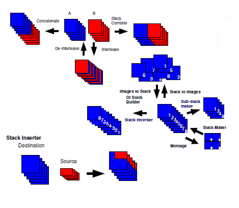

ImageJ / FIJI#
Fiji is a version of ImageJ with “batteries included”. To us, this includes several HDF5/Bioformat libraries that will help load our .tiff files.
Download Fiji for your platform here.
Although our data is in .tiff format, loading it in Fiji may seem abnormal because ImageJ has no knowledge of the dimensionality of our dataset.
Without metadata describing the dimensionality of your recording, Fiji This dataset sized [1 x 1 x zT], where zT is the number of z-planes (for LBM, typically 15-28) interleaved with each other.
Shown in the image below is a graphical representation of this reconstruction.
In its raw form (see A in the below figure), ScanImage tiff files are multipage tiffs - like a book.
Load LBM data#
To open your dataset:
File > Open >
select .tiff file> Open as Hyperstacks
{kind=link}
Important
virtual Hyperstacks will only load frames as you need them and will significanly reduce the memory needed to load these files.
If you play the raw video, what you see will not look like a movie. You will see changing z-planes at ascending (or descending, depending on paradigm) depths of tissue. This is due to the interleaved z-planes in time:
Hint
Click on the below gif to open a popup.


This same process can be done in ImageJ:
Image > Stacks > Tools > Stack Splitter
Number of Substacks: [enter the number of z-planes, 30 here]
This will split the original file into num_zplane separate [Y, X, T] stacks.
More Tips#
Intensity#
You may also notice that the
The brightness differences between these planes can be auto-scaled via Image>Process>Scale (or control-shift-x) to bring up the intensity toolbar
Stacks/Slice Manipulation#
There are a host of other manipulations you can do to Z-stacks. Below is a general diagram illustrating the main core features without needing additional plugins.
{kind=link}
Plugins#
TODO!